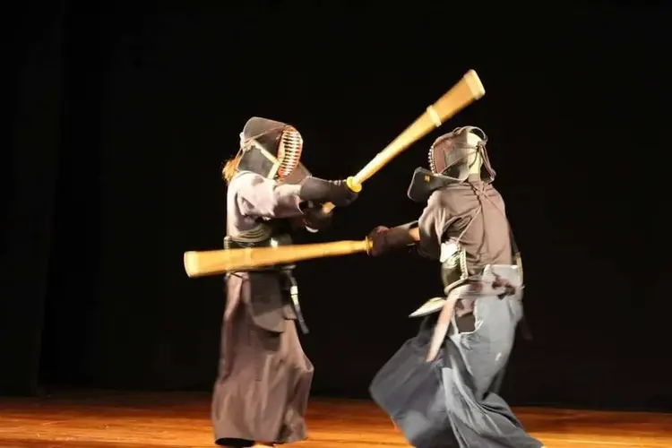
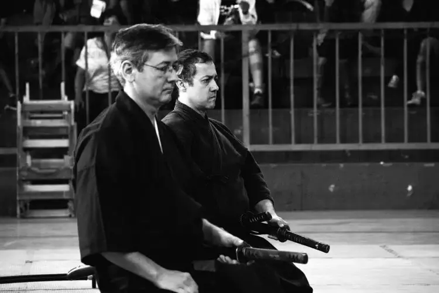
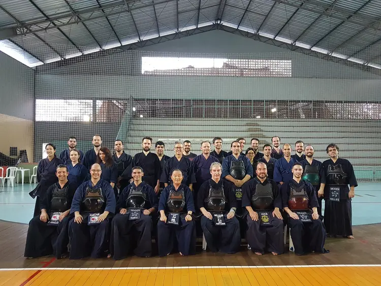
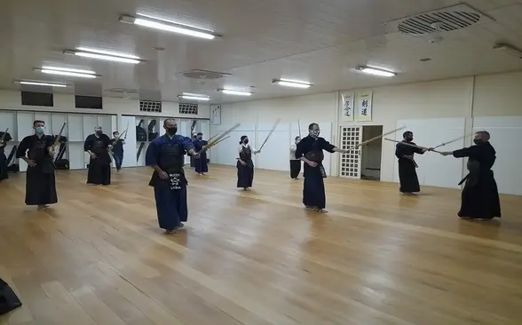
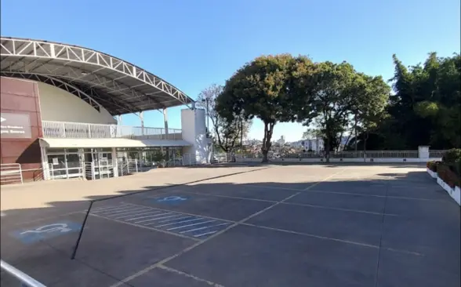

O Kendo é uma arte marcial japonesa em que se usa o bogu (armadura de proteção) e a shinai (espada de bambu) para treinar as técnicas de luta com a katana (espada japonesa). Segundo a AJKF (All Japan Kendo Federation), o objetivo do kendo é desenvolver a mente e o corpo dos praticantes e facilitar o desenvolvimento do caráter humano através do treino persistente.
O propósito de se praticar kendo é moldar a mente e o corpo, cultivar um espírito vigoroso e através do treino correto e rígido, buscar o aperfeiçoamento na arte do kendo, estimar a cortesia e a honra, relacionar-se com os outros com sinceridade e sempre buscar cultivar a si mesmo. Isto vai permitir desenvolver a capacidade de amar seu país e sua sociedade, contribuir para o desenvolvimento da cultura e promover a paz e a prosperidade entre todas as pessoas.
O Kendo evoluiu da necessidade de se transmitir as técnicas de manejo da espada, utilizadas pelos samurais nas diversas escolas/famílias e evoluiu até se tornar uma forma de encarar a vida (ken=espada, do=caminho). Trata-se de uma arte marcial moderna que não é voltada diretamente para autodefesa, já que não carregarmos espadas na cintura atualmente. Por outro lado, as atitudes que aprendemos durante o treinamento usamos o tempo todo, no trabalho, na escola, com amigos e família. Durante os treinos é enfatizado a etiqueta, o respeito aos companheiros, o treino arduo e o aperfeiçoamento contínuo. As competições, são encaradas como mais uma forma de aprendizado e não são o objetivo final do kendo, como acontece em outros esportes profissionais. Para se ter uma idéia, os campeões do mundial recebem como prêmio uma espada de treino e um diploma, não existem prêmios em dinheiro. O kendo é praticado amplamente no japão e por diversos países ao redor do mundo.


O iaido é uma arte marcial em que se aprende a sacar, cortar e retornar a espada à bainha em um instante para derrotar um agressor. A prática do iaido estimula o treinamento da mente, do corpo e o desenvolvimento do respeito, concentração, autoconhecimento, autocontrole, autocrítica, atenção aos detalhes entre outras habilidades essenciais no nosso dia-a-dia. Pode-se dizer que é uma prática semelhante a uma meditação em movimento.
A ligação entre o iaido e o kendo é muito próxima e é muito comum se ouvir que são lados de uma mesma moeda. Existem diversas escolas tradicionais de iaido, cada uma com suas próprias formas e protocolos, por isso em 1969 a AJKF (All Japan Kendo Federation), estabeleceu o Seitei Iai, 7 formas padronizadas de treino (mais tarde se expandiu para 12 formas) com características representativas dos principais estilos antigos, com o objetivo de transmitir para os estudantes de kendo os princípios do iaido e para que praticantes de diferentes escolas de iai pudessem praticar juntos.
A escola tradicional que nós treinamos é o Mugai-ryu Iaihyodo. Originalmente a escola se chamava Jikkyo-ryu e o fundador do Mugai-ryu kenjutsu, Tsuji Gettan aprendeu com seu fundador. Quando ficou claro que Jikkyo-ryu não teria um sucessor, ele foi oficialmente herdado pelos praticantes de Mugai-ryu e a quinta geração de sucessores que de fato incorporou o Jikkyo-ryu ao Mugai-ryu. Nakagawa Shiryu Shinichi, o décimo primeiro sucessor, foi o responsável pela reforma e compilação do Mugai-ryu e Jikkyo-ryu e estabeleceu o Mugai-ryu Iaihyodo. Nakagawa não deixou um sucessor, assim seus alunos acabaram se dividindo e formando diversas ramificações do Mugai-ryu. A ramificação que treinamos é a Meishi-ha Mugai-ryu Iaihyodo liderada por Niina Toyoaki.
O kendo em belo horizonte começou em 2008 com um grupo de entusiastas que se juntou ao sensei que havia acabado de se mudar de Brasília e com o apoio da AMCNB, iniciou os treinos em outubro.
Em 2009 o grupo se expandiu e passou a ter treinos também em outros locais, em fevereiro recebemos a visita da ABK (Brasilia) e em junho da CBK (Confederação Brasileira De Kendo) realizando o primeiro seminário oficial de kendo e iaido em belo horizonte. No segundo semestre de 2009 nosso grupo foi oficialmente vinculado à CBK e desde então tem participado de diversos eventos promovidos pela confederação.
Em 2017 aconteceu outro grande marco no kendo de BH, foi fundado o Matsuoka Budokai, criando assim um novo local de treino com um ambiente com piso próprio para a prática. Em 2018 realizamos o primeiro campeonato de kendo em belo horizonte para comemorar 10 anos do grupo.
O treino de Seitei Iai se iniciou em BH com o apoio da CBK na visita realizada em 2009, mas a prática ainda era individual e incipiente. Em 2011 outro sensei se mudou para BH iniciando os treinos de Mugai-ryu Iaihyodo. Nos anos seguintes vários praticantes participaram de diversos seminários nos estados unidos obtendo graduação em Mugai-ryu. Paralelamente, outros praticantes também se graduaram em Seitei Iai pela CBK e CLAK(Confederação Latino Americana de Kendo). Em 2018 recebemos a visita de senseis do japão que realizaram o primeiro seminário de Mugai-ryu em BH com presença do Gosoke Niina Toyoaki, Kubota-sensei (8º dan) e Komatsu-sensei (6º dan).
Nosso grupo é o único em minas gerais vinculado a confederação brasileira de kendo, que por sua vez é vinculada a federação internacional de kendo no japão, nosso kendo é o mesmo treinado no japão e no mundo inteiro.

Recebemos novos alunos sempre nas últimas aulas do mês (divulgamos nas redes sociais), os interessados em praticar podem consultar as próximas datas ou obter mais informações entrando em contato:
É cobrado uma matrícula de R$ 120,00 e uma mensalidade de R$ 70,00, usadas para o próprio grupo já que o kendo é totalmente voluntário e sem fins lucrativos. Nós emprestamos os equipamentos até você poder comprar o seu, porém exigimos que compre a shinai depois das primeiras aulas por ser um item pessoal que se desgasta. Os valores já estão incluso a filiação a confederação brasileira, permitindo ao praticante participar de eventos oficiais.
Os requisitos para treinar são roupas adequadas para exercícios físicos, e muita vontate de treinar. O kendo pode ser praticado por qualquer um e qualquer idade, necessidades especiais deverão ser avaliadas pelo instrutor responsável, com a devida orientação médica.
O treino prático do kendo é realizado utilizando um uniforme específico (keikogi e hakama) armadura de proteção (bogu) a espada de treino (shinai). Também são feitos treinos de kata (forma) utilizando a espada de madeira maciça (bokuto/boken). O treino tem duração de 01:30 á 02:00, sendo composto de alongamento/aquecimento, treino de golpes básicos, e treino pratico entre todos os alunos, quando aqueles que já utilizam armadura recebem golpes dos iniciantes, e no fim um período reservado apenas para os que já utilizam armadura. Já no iaido se treina os movimentos básicos e depois se treina katas, geralmente se alterna entre dias da prática do seitei iai e do mugai-ryu, iniciantes usam a bokuto e saya (bainha), somente os avançados podem utilizar uma espada de metal.

Matsuoka Budokai:R. Barão de Leopoldina, 130 - Alto dos Pinheiros, Belo Horizonte - MG
Quarta-Feira: 20:00 a 21:30 IAIDO
Quinta-Feira: 20:00 a 21:30 KENDO
Sábado: 09:30 a 11:00 IAIDO
Domingo: 10:00 a 12:00 KENDO

AMCNBR. Dom Lourenço de Almeida, 535 - Nova Cachoeirinha, Belo Horizonte - MG
Terça-Feira: 20:00 a 21:30 KENDO